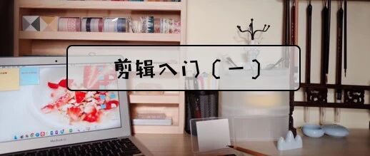

教程| 如何安装剪辑软件？干货答疑都在这
和 我 一 起 治 愈 生 活

图：@网络
文：@秋秋
大家好，又见面了～
最近来了很多学剪辑的朋友，这也是我们第一次正经教学&这两天抖音直播素材的整理。剪辑教程和学习技能持续更新中.....
本篇文章你将获得：
苹果电脑fcpx不同版本的安装包
Windows电脑pr软件的安装包及破解插件
🍎fcpx安装步骤及常见问题
高清视频下载素材的网址
1.fcpx不同版本安装包
如果安装了fcpx，但是装完之后，出现了这幅图：

那么就是版本太低，带不起来。
大家一定要先看看自己的电脑版本💻，看的地方是点击我的电脑-关于本机，概览这里🍵

比如我的电脑就是10.14.6，那一定要找电脑对应版本的下载链接🔗。这个听起来有点绕，这也就是为什么学剪辑难的地方，很多人都是败在第一步。

但是我希望大家一定把这个问题解决，我也专门写文章，就是希望大家不要倒在第一步！一定先把软件装上！（🙈）
更新安装的链接我放在下面了🔗，大家先看电脑版本，再决定下载。举个例子🌰，我是10.14.6就下载第2个链接的。
大家可以记一个简单的方法，低版本10.13的，下载第一个，系统高10.14的下载第二个。
版本: 10.4.6
适合电脑💻：macOS 10.13.6 或更高版本， 64 位处理器
https://pan.baidu.com/s/1IfZrMBvHhl-nmoHv0lr9ww
版本: 10.4.8
适合电脑💻：macOS 10.14.6 或更高版本， 64 位处理器
https://pan.baidu.com/s/1JJcStv3S6NgSaY9Qv9kiqg
（这里不好复制，后台回复安装包即可）
2.Windows电脑pr安装包及破解插件
我给大家的2017的，现在更新2019的，也是后台回复「安装包」就可以了～
如果下载pr之后，发现安装失败，32位电脑不能装，那就是电脑问题。

如果是安装之后，需要注册或者是其他问题，应该是没有破解，可以看看软件包里面的教程，或者下载破解插件。
链接: https://pan.baidu.com/s/1sDIUvemEaFc8k_QeiFeFlA 提取码: jb9q（不能复制依旧回复 安装包）
至于安装，点击set up就可以了，有什么其他问题也可以发群里，大家一起交流（我看大家都很善良热情～这些软件也都是分享发的，为小伙伴点赞）
3. 🍎fcpx安装步骤及常见问题
如果你安装fcpx遇到这个问题：

那么是系统安全性隐私没有打开，这么设置：
第一步：电脑必须提前设置成“允许任何来源”
Q：如何打开允许任何来源？
在 Finder 菜单栏选择 【前往】 – 【实用工具 】， 找到【终端】程序，双击打

在终端窗口中输入：

输入代码后，按【return 回车键】，这时候会提示输入密码：直接输入自己的电脑密码，然后按【return 回车键】即可，
（提示：在输入密码的时候，终端不会有任何显示。密码为开机密码，不要错误）
关闭【终端】，重新打开 【系统偏好设置】 – 【安全性与隐私】 – 【通用】 中就会出现且选中 【允许任何来源】

然后就可以了～
第二步：打开软件就可以了
4.高清视频下载素材的网址
昨天抖音直播的时候，有小伙伴问剪辑视频去哪里下载素材，这里给大家整理了素材网站：
1.https://www.yugaopian.cn/
2.http://www.hd-trailers.net/
3.rarbgmirror.org
4.https://www.torrentdownload.info/
除了下载素材，大家还可以像直播的时候教的那样录屏～但是注意一定不要去商用。
写在最后📖
其实在一周前，我从来没有想过会认识这么多小伙伴，甚至得到部分人的喜欢。所以很开心认识你们～
咱们的抖音剪辑交流群氛围都很好，大家会互相帮助大家答疑，还有找各种软件。下面我就整理了一下：
@喜饼儿
@鲨鱼哥
@徐大仙
分享软件如下：
（1）mac版本的ps
链接🔗：
https://pan.baidu.com/s/1cYx4iYJF6tD_Y4UDFtAotw 密码:r0ul
(2)pr破解版安装包
链接🔗：https://pan.baidu.com/s/1sDIUvemEaFc8k_QeiFeFlA 提取码: jb9q
（3）pr2019安装包
链接🔗：pan.baidu.com/s/1nuacP8yqOKdJ1egdNoNa7A 提取码: t6y4
我会整理到群文件，感谢大家🙏，也希望大家能在我们群里互相帮助，真的是帮助大家快乐自己（但是这些软件咱们还是支持正版哈）。
另外，字体、音效、素材还有我最近看的电子书📖都放在QQ群文件了，大家想进的自愿进，群号是1036633457
为了避免有人进群发广告，设置进群费2块，资料持续更新....


最后，我还是想说一下我的目标是做一名温暖的学习博主（哈哈哈），所以除了剪辑教程还会出读书、文具、其他技能的教程🚗，希望大家全部喜欢～

其他文章推荐：

原创文章，转载请告知本人并标注来源
工作联系：17865514429 （微信）
请注明来意 :)
@微博：秋秋一日甜
喜欢记得星标，让我们一起成长